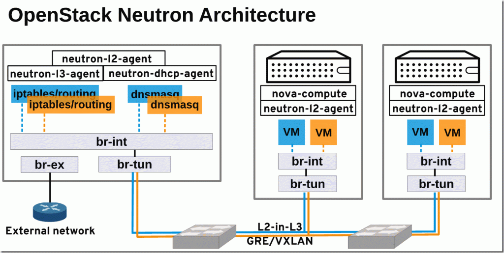
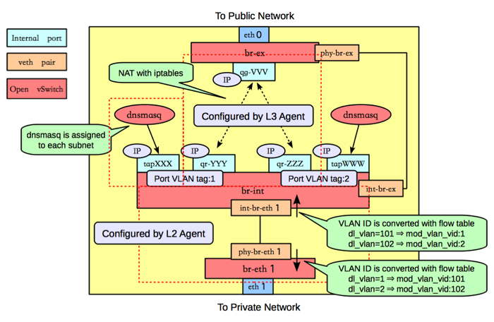
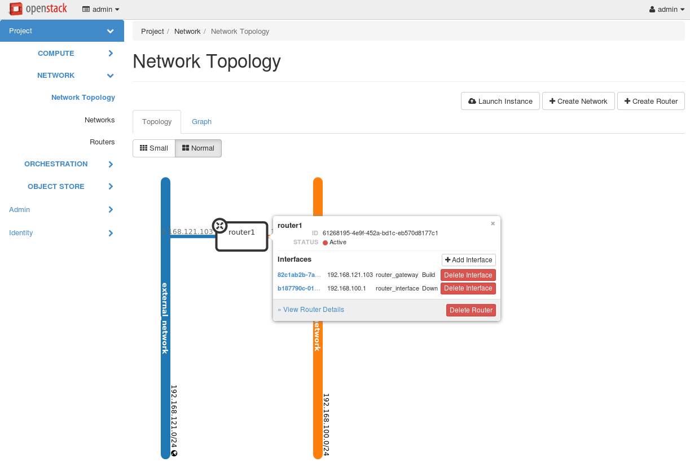
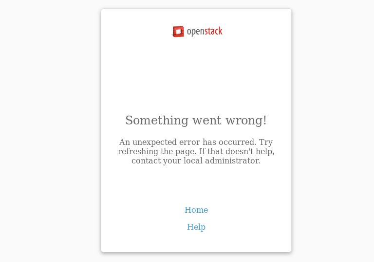

Openstack Cloud¶
mkdir lab2
cd lab2
vi Vagrantfile
Vagrantfile
# -*- mode: ruby -*-
# vi: set ft=ruby :
$master_script = <<SCRIPT
set -ex
date > /etc/vagrant_box_build_time
echo "root:linux" | chpasswd
cat << HOST >> /etc/hosts
10.10.10.10 controller.example.com controller
10.10.10.11 compute.example.com compute
HOST
echo "nameserver 8.8.8.8" > /etc/resolv.conf
sed -i "s/SELINUX=enforcing/SELINUX=disabled/g" /etc/selinux/config
setenforce 0
echo "vagrant ALL=(root) NOPASSWD:ALL" >> /etc/sudoers.d/vagrant
chmod 0440 /etc/sudoers.d/vagrant
sed -i.orgi "s/PasswordAuthentication no/PasswordAuthentication yes/g" /etc/ssh/sshd_config
systemctl restart sshd
systemctl stop firewalld
systemctl disable NetworkManager
systemctl stop NetworkManager
systemctl enable network
systemctl start network
#yum install -y centos-release-openstack-mitaka
yum install -y centos-release-openstack-newton
yum update -y
yum install -y openstack-packstack
SCRIPT
Vagrant.configure(2) do |config|
config.vm.box = "centos/7"
config.vm.define :controller do |node|
node.vm.hostname = "controller.example.com"
node.vm.provider :libvirt do |libvirt|
libvirt.uri = 'qemu+unix:///system'
libvirt.cpus = 8
libvirt.memory = 16384
libvirt.nested = true
libvirt.storage :file, :size => '10G'
libvirt.storage :file, :size => '10G'
end
#eth1 network
node.vm.network :private_network, ip: "10.10.10.10"
node.vm.network :private_network, ip: "10.10.20.10"
node.vm.provision :shell, :inline => $master_script
end
config.vm.define :compute do |node|
node.vm.hostname = "compute.example.com"
node.vm.provider :libvirt do |libvirt|
libvirt.uri = 'qemu+unix:///system'
libvirt.cpus = 8
libvirt.memory = 8192
libvirt.nested = true
end
#eth1 network
node.vm.network :private_network, ip: "10.10.10.11"
node.vm.network :private_network, ip: "10.10.20.11"
node.vm.provision :shell, :inline => $master_script
end
end
Terminal1:
vagrant up --provider libvirt
vagrant status
Current machine states:
controller running (libvirt)
compute running (libvirt)
vagrant ssh controller
sudo su -
ssh-keygen -t rsa -b 4096 -C "openstack"
ssh-copy-id compute
ssh-copy-id controller
//Test ssh
ssh compute "hostname"
exit
ssh controller "hostname"
exit
Terminal1:
//prepare disk for volume group
sudo su -
fdisk -l
fdisk /dev/vdb
n
p
1
enter
enter
w
partprobe
pvcreate /dev/vdb1
vgcreate cinder-volumes /dev/vdb1
ตั้งค่า Timeserver (Terminal 2 ):
$ sudo yum install chrony -y
$ sudo vi /etc/chrony.conf
//เปลี่ยนแปลง time server
server 1.th.pool.ntp.org iburst
server 0.asia.pool.ntp.org iburst
server 2.asia.pool.ntp.org iburst
//อนุญาติให้เครื่องในวง 10.10.10.0/24 สามารถ syncได้
allow 10.10.10.0/24
$ sudo systemctl restart chronyd
$ chronyc sources
210 Number of sources = 3
MS Name/IP address Stratum Poll Reach LastRx Last sample
===============================================================================
^- ntp02.cpe.rmutt.ac.th 2 6 7 1 -16ms[ -11ms] +/- 225ms
^* time1.isu.net.sa 1 6 7 0 +5882us[ +11ms] +/- 140ms
^+ 202-65-114-202.jogja.citr 2 6 7 1 -13ms[-7965us] +/- 93ms
ตั้งค่า Timeserver (Terminal 1 ):
sudo yum install chrony -y
vi /etc/chrony.conf
//เปลี่ยนแปลง time server ให้ชื้ไปยัง server
server 10.10.10.10 iburst
sudo systemctl restart chronyd
$ chronyc sources
210 Number of sources = 1
MS Name/IP address Stratum Poll Reach LastRx Last sample
===============================================================================
^? controller.example.com 3 6 1 1 +6209us[+6209us] +/- 84ms
เครื่อง controller ให้ run คำสั่ง packstack พร้อมกับ option เพื่อ ติดตั้ง openstack โดยคำสั่ง packstack จะรับค่าoption และนำไปสร้าง file template ที่มีตัวแปรที่กำหนด หลังจากนั้นจะส่งต่อให้ puppet นำไปสร้างเป็น puppet module เพื่อติดตั้ง openstack ต่อไป
Terminal1:
//run packstck
//packstack --install-hosts=CONTROLLER_ADDRESS,COMPUTE_ADDRESSES
sudo su -
packstack --install-hosts=10.10.10.10,10.10.10.11 \
--nagios-install=n \
--provision-demo=n \
--os-neutron-ovs-bridge-mappings=extnet:br-ex,physnet1:br-eth2 \
--os-neutron-ovs-bridge-interfaces=br-ex:eth0,br-eth2:eth2 \
--os-neutron-ml2-type-drivers=vxlan,flat,local,vlan \
--os-neutron-ml2-vlan-ranges=physnet1:1000:2000 \
--os-heat-install=y --os-heat-cfn-install=y \
--os-sahara-install=y --os-trove-install=y \
--os-neutron-lbaas-install=y \
--cinder-volumes-create=n \
--keystone-admin-passwd=linux
ท่านสามารถเเปลี่ยน password ได้จาก บรรทัด keystone-admin-passwd=<password ที่ต้องการ>
Applying 10.10.10.10_controller.pp
10.10.10.10_controller.pp: [ DONE ]
Applying 10.10.10.10_network.pp
10.10.10.10_network.pp: [ DONE ]
Applying 10.10.10.11_compute.pp
10.10.10.11_compute.pp: [ DONE ]
Applying Puppet manifests [ DONE ]
Finalizing [ DONE ]
Additional information:
* A new answerfile was created in: /root/packstack-answers-20161012-141203.txt
* Time synchronization installation was skipped. Please note that unsynchronized time on server instances might be problem for some OpenStack components.
* File /root/keystonerc_admin has been created on OpenStack client host 10.10.10.10. To use the command line tools you need to source the file.
* To access the OpenStack Dashboard browse to http://10.10.10.10/dashboard .
Please, find your login credentials stored in the keystonerc_admin in your home directory.
* Because of the kernel update the host 10.10.10.11 requires reboot.
* Because of the kernel update the host 10.10.10.10 requires reboot.
* The installation log file is available at: /var/tmp/packstack/20161012-011346-Rr34Lj/openstack-setup.log
* The generated manifests are available at: /var/tmp/packstack/20161012-011346-Rr34Lj/manifests
[root@controller ~]#
Note
เมื่อติดตั้ง ประสบความสำเร็จ packstack จะรายงายผลออกมาที่สำคัญได้แก่
* ชื่อของ answerfile ที่ใช้สำหรับการแก้ไขต่อไปในอนาคต /root/packstack-answers-20161012-141203.txt
* ip address สำหรับการเข้าใช้งาน
Warning
หากมีความผิดพลาดแล้วจะต้อง run packstack ใหม่ให้ สั่งคำสั่ง จาก answerfil ที่สร้างขึ้น
[root@controller ~]# ls
packstack-answers-20161012-011347.txt
[root@controller ~]# packstack --answer-file=packstack-answers-20161012-011347.txt
เครื่อง host จะทำการติดตั้ง openstack client เพื่อเข้าไปใช้งาน
Terminal2:
//install openstack client
## Install openstack client [on host]
$ sudo dnf install python-{openstack,keystone,nova,neutron,glance,cinder,\
swift,heat,ceilometer}client
## create working folder
$ cd ~ && mkdir openstackrc && cd openstackrc
##create file ชื่อ admin_rc_v2 (เป็นชื่ออะไรก็ได)
$ cat << RC > admin_rc_v2
unset OS_SERVICE_TOKEN
export OS_USERNAME=admin
export OS_PASSWORD=linux
export OS_AUTH_URL=http://10.10.10.10:5000/v2.0
export PS1='[\u@\h \W(keystone_admin)]\$ '
export OS_TENANT_NAME=admin
export OS_REGION_NAME=RegionOne
RC
## Test เรียกดู user
$ source admin_rc_v2
$ openstack user list
+----------------------------------+------------+
| ID | Name |
+----------------------------------+------------+
| 5c08e42a280445e283a71d6e01735811 | admin |
| 08bc39d8bfaf40e5903dd96a0641ee9d | neutron |
| a7dfe90d96e345268d303f95cab83ef2 | heat |
| ab12686ca4b14868956d310f1aca1af8 | gnocchi |
| 38be373dfe674e089e02c88be07f92a2 | aodh |
| 036d2e3e3ed940dd84b0575d838621bc | nova |
| 302bbb18eeab418f83288690521dd1bf | glance |
| eb387675e73441a497f4549d59fa02f4 | trove |
| 14c2a2c213d64be499315b8897585924 | sahara |
| e44524eff3da4c57a8283caead1c63ea | ceilometer |
| 830c925ee56045df8c7a226612f66d26 | cinder |
| 96f580c5af874165a54f28d71f3641ca | heat-cfn |
| 355e46c0f63b499aa2b7eb14f698f97e | swift |
+----------------------------------+------------+
$ openstack project list
+----------------------------------+----------+
| ID | Name |
+----------------------------------+----------+
| 297c9df6fa3c469cbb587248cf59cb4e | admin |
| 34c47a8e222543918153a2ed348f419d | services |
+----------------------------------+----------+
$ openstack role list
+----------------------------------+------------------+
| ID | Name |
+----------------------------------+------------------+
| 3db26d6d909848aa8aefd886d9aa8f2a | SwiftOperator |
| 84bb64935d284a248791c4a3bac183ff | heat_stack_user |
| 88c6a2e7af25486487e61153554fde71 | admin |
| 9fe2ff9ee4384b1894a90878d3e92bab | _member_ |
| b10f0d654b5c4d22bc2818c0c9d1012c | ResellerAdmin |
| d609a95d200f46bca2d893b421f12cff | heat_stack_owner |
+----------------------------------+------------------+
เครื่อง host
Terminal2:
$ cd ~/openstackrc
$ wget http://download.cirros-cloud.net/0.3.4/cirros-0.3.4-x86_64-disk.img
$ openstack image create "cirros" \
--file cirros-0.3.4-x86_64-disk.img \
--disk-format qcow2 --container-format bare \
--public
ผลลัพท์ที่ได้
+------------------+------------------------------------------------------+
| Field | Value |
+------------------+------------------------------------------------------+
| checksum | ee1eca47dc88f4879d8a229cc70a07c6 |
| container_format | bare |
| created_at | 2016-10-12T05:25:56Z |
| disk_format | qcow2 |
| file | /v2/images/eb971176-4804-4fc2-8266-a90b1341b8a6/file |
| id | eb971176-4804-4fc2-8266-a90b1341b8a6 |
| min_disk | 0 |
| min_ram | 0 |
| name | cirros |
| owner | 686e1f1af2ce4333931bd178c12c22c3 |
| protected | False |
| schema | /v2/schemas/image |
| size | 13287936 |
| status | active |
| tags | |
| updated_at | 2016-10-12T05:25:56Z |
| virtual_size | None |
| visibility | public |
+------------------+------------------------------------------------------+
แสดง รายการ image
$ openstack image list
+--------------------------------------+--------+--------+
| ID | Name | Status |
+--------------------------------------+--------+--------+
| eb971176-4804-4fc2-8266-a90b1341b8a6 | cirros | active |
+--------------------------------------+--------+--------+
Network Architecture¶
Openvswitch device¶
Terminal 1 บนเครื่อง controller ตรวจสอบ ด้วยคำสั่ง ovs-vscht show
# ovs-vsctl show
6a15cbb5-18ef-4e40-8a6a-339dc0fccb7b
Manager "ptcp:6640:127.0.0.1"
is_connected: true
Bridge br-tun
Controller "tcp:127.0.0.1:6633"
is_connected: true
fail_mode: secure
Port patch-int
Interface patch-int
type: patch
options: {peer=patch-tun}
Port br-tun
Interface br-tun
type: internal
Port "vxlan-0a0a0a0b"
Interface "vxlan-0a0a0a0b"
type: vxlan
options: {df_default="true", in_key=flow, local_ip="10.10.10.10", out_key=flow, remote_ip="10.10.10.11"}
Bridge br-int
Controller "tcp:127.0.0.1:6633"
is_connected: true
fail_mode: secure
Port "int-br-eth2"
Interface "int-br-eth2"
type: patch
options: {peer="phy-br-eth2"}
Port int-br-ex
Interface int-br-ex
type: patch
options: {peer=phy-br-ex}
Port patch-tun
Interface patch-tun
type: patch
options: {peer=patch-int}
Port br-int
Interface br-int
type: internal
Bridge br-ex
Controller "tcp:127.0.0.1:6633"
is_connected: true
fail_mode: secure
Port "eth0"
Interface "eth0"
Port phy-br-ex
Interface phy-br-ex
type: patch
options: {peer=int-br-ex}
Port br-ex
Interface br-ex
type: internal
Bridge "br-eth2"
Controller "tcp:127.0.0.1:6633"
is_connected: true
fail_mode: secure
Port "eth2"
Interface "eth2"
Port "br-eth2"
Interface "br-eth2"
type: internal
Port "phy-br-eth2"
Interface "phy-br-eth2"
type: patch
options: {peer="int-br-eth2"}
ovs_version: "2.5.0"
ภาพแสดง อุปกรณ์ ที่เป็น virtual devices ที่สร้างโดย openstack Compute node

Controller/Network node
สร้าง virtual network¶
สร้าง flat network ชื่อ extnet [เนื่องจาก –os-neutron-ovs-bridge-mappings=extnet:br-ex]
$ neutron net-create external_network --provider:network_type flat --provider:physical_network extnet --router:external
Created a new network:
+---------------------------+--------------------------------------+
| Field | Value |
+---------------------------+--------------------------------------+
| admin_state_up | True |
| availability_zone_hints | |
| availability_zones | |
| created_at | 2016-10-12T05:33:58Z |
| description | |
| id | b44cddbc-e544-434b-a96c-0ab95e741b29 |
| ipv4_address_scope | |
| ipv6_address_scope | |
| is_default | False |
| mtu | 1500 |
| name | external_network |
| project_id | 686e1f1af2ce4333931bd178c12c22c3 |
| provider:network_type | flat |
| provider:physical_network | extnet |
| provider:segmentation_id | |
| revision_number | 2 |
| router:external | True |
| shared | False |
| status | ACTIVE |
| subnets | |
| tags | |
| tenant_id | 686e1f1af2ce4333931bd178c12c22c3 |
| updated_at | 2016-10-12T05:33:58Z |
+---------------------------+--------------------------------------+
$ neutron subnet-create --name public_subnet --enable_dhcp=False --allocation-pool=start=192.168.121.100,end=192.168.121.200 \
--gateway=192.168.121.1 external_network 192.168.121.0/24
Created a new subnet:
+-------------------+--------------------------------------------------------+
| Field | Value |
+-------------------+--------------------------------------------------------+
| allocation_pools | {"start": "192.168.121.100", "end": "192.168.121.200"} |
| cidr | 192.168.121.0/24 |
| created_at | 2016-10-12T05:37:09Z |
| description | |
| dns_nameservers | |
| enable_dhcp | False |
| gateway_ip | 192.168.121.1 |
| host_routes | |
| id | a34c2cde-e5ec-42b5-8de4-232b425fb861 |
| ip_version | 4 |
| ipv6_address_mode | |
| ipv6_ra_mode | |
| name | public_subnet |
| network_id | b44cddbc-e544-434b-a96c-0ab95e741b29 |
| project_id | 686e1f1af2ce4333931bd178c12c22c3 |
| revision_number | 2 |
| service_types | |
| subnetpool_id | |
| tenant_id | 686e1f1af2ce4333931bd178c12c22c3 |
| updated_at | 2016-10-12T05:37:09Z |
+-------------------+--------------------------------------------------------+
สร้าง router และผู้กับ exteranl_network ทีสร้างไว้ก่อนแล้ว
$ neutron router-create router1
Created a new router:
+-------------------------+--------------------------------------+
| Field | Value |
+-------------------------+--------------------------------------+
| admin_state_up | True |
| availability_zone_hints | |
| availability_zones | |
| created_at | 2016-10-12T05:37:58Z |
| description | |
| distributed | False |
| external_gateway_info | |
| flavor_id | |
| ha | False |
| id | 61268195-4e9f-452a-bd1c-eb570d8177c1 |
| name | router1 |
| project_id | 686e1f1af2ce4333931bd178c12c22c3 |
| revision_number | 2 |
| routes | |
| status | ACTIVE |
| tenant_id | 686e1f1af2ce4333931bd178c12c22c3 |
| updated_at | 2016-10-12T05:37:58Z |
+-------------------------+--------------------------------------+
$ neutron router-gateway-set router1 external_network
Set gateway for router router1
สร้าง private network และผูก interface กับ router1
$ neutron net-create private_network
Created a new network:
+---------------------------+--------------------------------------+
| Field | Value |
+---------------------------+--------------------------------------+
| admin_state_up | True |
| availability_zone_hints | |
| availability_zones | |
| created_at | 2016-10-12T05:41:12Z |
| description | |
| id | edaa3879-691e-4cef-89a4-eba6f866129e |
| ipv4_address_scope | |
| ipv6_address_scope | |
| mtu | 1450 |
| name | private_network |
| project_id | 686e1f1af2ce4333931bd178c12c22c3 |
| provider:network_type | vxlan |
| provider:physical_network | |
| provider:segmentation_id | 85 |
| revision_number | 2 |
| router:external | False |
| shared | False |
| status | ACTIVE |
| subnets | |
| tags | |
| tenant_id | 686e1f1af2ce4333931bd178c12c22c3 |
| updated_at | 2016-10-12T05:41:12Z |
+---------------------------+--------------------------------------+
$ neutron subnet-create --name private_subnet private_network 192.168.100.0/24
Created a new subnet:
+-------------------+------------------------------------------------------+
| Field | Value |
+-------------------+------------------------------------------------------+
| allocation_pools | {"start": "192.168.100.2", "end": "192.168.100.254"} |
| cidr | 192.168.100.0/24 |
| created_at | 2016-10-12T05:41:36Z |
| description | |
| dns_nameservers | |
| enable_dhcp | True |
| gateway_ip | 192.168.100.1 |
| host_routes | |
| id | fe006934-5bdc-4643-aba7-4e4e59a587a6 |
| ip_version | 4 |
| ipv6_address_mode | |
| ipv6_ra_mode | |
| name | private_subnet |
| network_id | edaa3879-691e-4cef-89a4-eba6f866129e |
| project_id | 686e1f1af2ce4333931bd178c12c22c3 |
| revision_number | 2 |
| service_types | |
| subnetpool_id | |
| tenant_id | 686e1f1af2ce4333931bd178c12c22c3 |
| updated_at | 2016-10-12T05:41:36Z |
+-------------------+------------------------------------------------------+
$ neutron router-interface-add router1 private_subnet
(ผลที่ได้ทำให้ external และ private subnet เชื่อมหากัน)
Added interface b187790c-0192-4819-8881-c82553260485 to router router1.
ผลที่ได้
หากเกิด Basic Error ดังรูปแก้โดย restart httpd
systemctl restart httpd